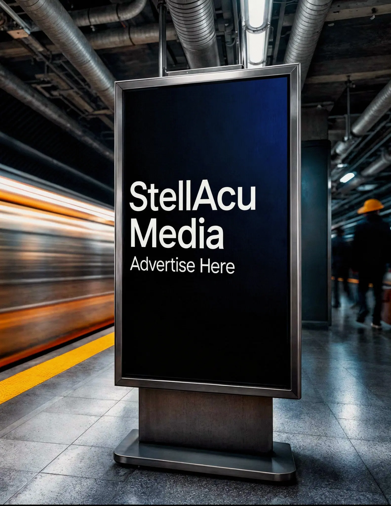

The 6-format DOOH playbook we ran across 12 cities.

The brand was a mid-market D2C company in personal care. They had built awareness on Instagram and YouTube, hit a plateau in performance, and the CFO wanted to test something different before committing another $4M to digital paid.
We pitched a 12-city DOOH activation across 6 format types over 90 days. The CFO was skeptical. DOOH had a reputation in the company as "billboard money you can't measure."
By the end of the campaign, brand recall in the test markets was 4.2x higher than the control markets, and offline-to-online attribution showed a 28% lift in branded search query volume in the 12 cities.
Why 6 formats and not 1
The reflex with DOOH is to pick the format that performs best and concentrate spend there. We do the opposite for awareness campaigns. We run a portfolio because each format hits a different daypart and behavioral context.
The 6 formats we used:
- Large-format roadside: drive-time, broad reach
- Transit shelters: commuter, repeat exposure
- Mall and retail interior: purchase-intent context
- Office building lobbies: B2C-to-professional crossover
- Gym and wellness venue screens: category-relevant audience
- Programmatic taxi-top digital: urban density, day/night flexibility
How we sequenced the buy
- Weeks 1-3: Launch with roadside + transit shelters. Build broad recognition.
- Weeks 4-6: Layer mall and gym screens. Move into purchase-intent contexts.
- Weeks 7-9: Add office lobbies and programmatic taxis. Deepen frequency.
- Weeks 10-12: Pull back to roadside only as a reminder layer.
How we measured what most teams say is unmeasurable
Layer 1: Branded search lift. We tracked branded search query volume in 12 test cities vs 12 matched control cities. Lift was 28% by week 6.
Layer 2: Walk-in retail conversion. We tracked footfall and conversion at 140 retail partners. Test cities ran 17% higher conversion.
Layer 3: Geo-fenced mobile retargeting. We retargeted devices that had passed DOOH placements. CTR on those retargeting pools was 2.4x higher than cold lookalike pools.
What the data taught us about DOOH planning
One. Format portfolio outperforms format concentration. The portfolio outperformed the single best-performing format by 1.8x on recall.
Two. Sequencing matters more than total spend. Sequenced deployment outperformed simultaneous deployment by 31%.
Three. Attribution is solvable. Three layers of measurement give DOOH the same defensibility as a paid digital campaign.
If your brand has plateaued on digital and the CFO is asking what else there is, DOOH is the most underused answer in the B2C playbook.